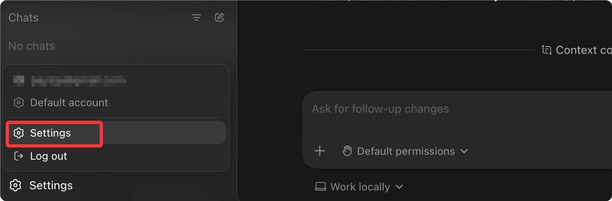
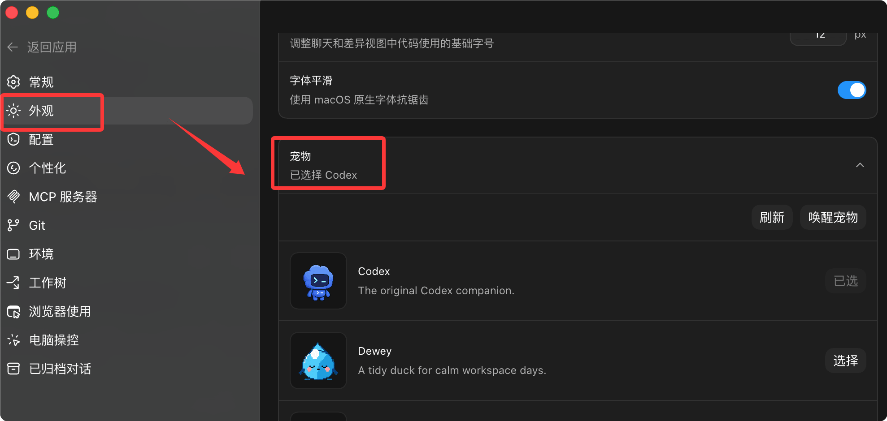
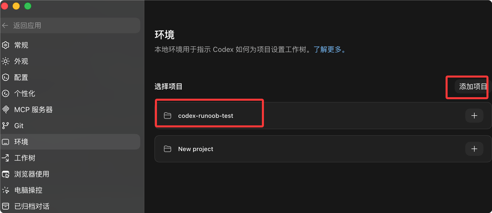
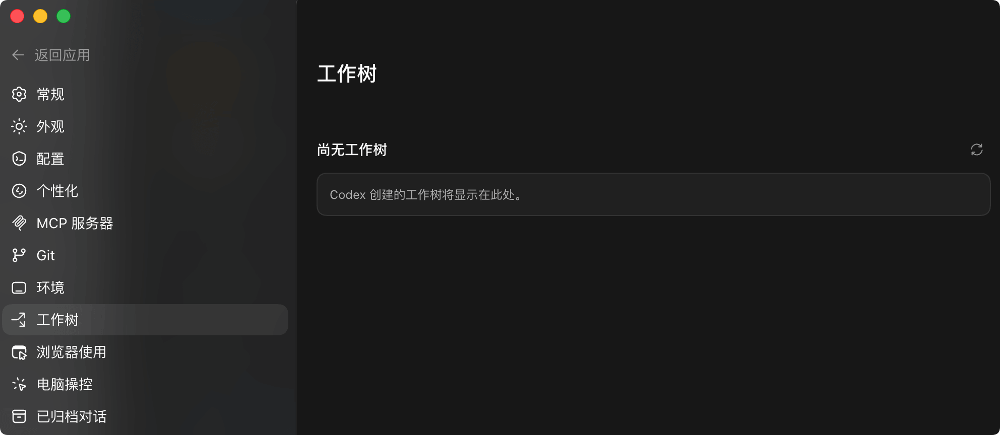
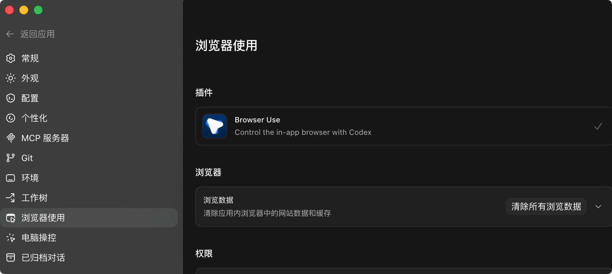
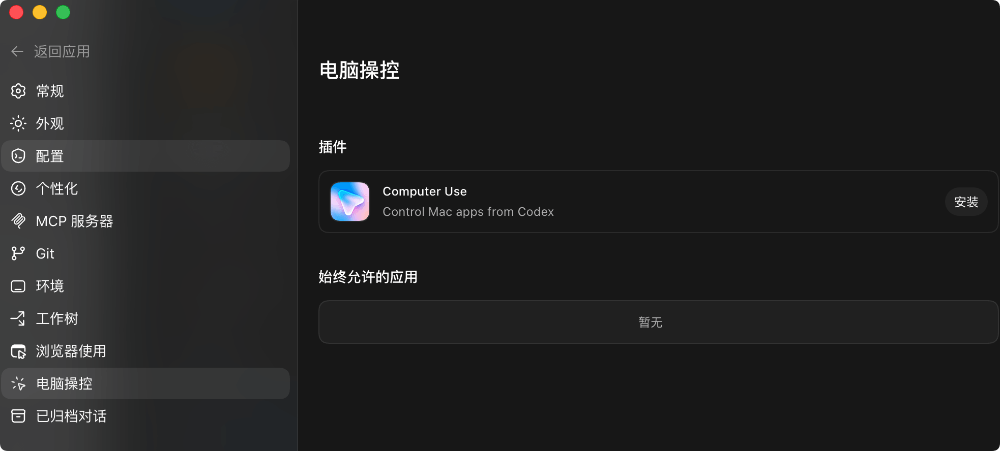
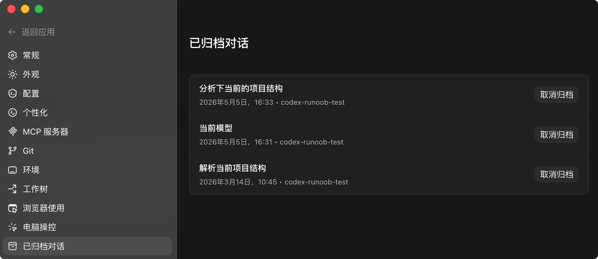

Codex 設定とカスタマイズ
Codex は豊富な設定オプションを提供し、Agent の動作をカスタマイズしてさまざまな作業ニーズに対応できます。
デフォルトでは、Codex App はシステムの言語設定に従います。設定されていない場合は、Settings（設定）から変更できます：

General（一般）を選択し、一般オプションで必要な言語を変更します：

同様に、中国語から英語に変更したい場合は、英語にチェックを入れます：

Codex App の設定
開き方：アプリメニューの設定（Settings）をクリックするか、またはCmd + ,：

設定画面は次のとおりです：

一般（General）：設定ファイルの開き方、コマンド出力を会話スレッドに表示する量を設定します。また、複数行のプロンプトを Cmd+Enter で確認する必要がある設定や、タスク実行中のシステムのスリープを防止する設定もできます。
通知（Notifications）：タスク完了通知のトリガータイミングと、アプリがシステム通知の権限を自ら要求するかどうかを設定します。

Agent 設定（Agent Configuration）：App の Codex Agent は、IDE および CLI 拡張機能と同じ設定を共有します。一般的なオプションは App 内で直接調整できますが、高度なオプションは config.toml ファイルを編集する必要があります（後述）。

外観（Appearance）：基本テーマの選択、アクセントカラー・背景色・前景色の調整、UI フォントとコードフォントの変更が可能です。カスタムテーマを他の人と共有することもできます。

Codex ペット（Codex Pets）：オプションの動的コンパニオンキャラクター。パス：Settings（設定） > Appearance（外観） > Pets（ペット）組み込みペットを選択するか、ローカルの Codex ホームディレクトリからカスタムペットを読み込むことができます。

操作方法：
- 入力ボックスに入力します
/pet - 使用するSettings > Appearance内のWake Pet 或 Tuck Away Pet
- 按
Cmd+K/Ctrl+Kの後、同名のコマンドを実行します
ペットのフローティングウィンドウは、他のアプリを使用している間も現在の Codex の動作状態（実行中 / 入力待ち / レビュー待ち）を表示し続け、簡単な進捗ヒントを表示します。
カスタムペット（作成フロー）：
$skill-installer hatch-pet
インストール後、コマンドメニューで選択しますForce Reload Skills、次に実行します：
$hatch-pet create a new pet inspired by my recent projects
Git: ブランチ命名規則を統一し、フォースプッシュ（force push）を有効にするかどうかを設定し、Codex がコミットメッセージ（commit message）と PR 説明を自動生成する際に使用するプロンプトを設定します。

環境：プロジェクトディレクトリの表示とプロジェクトの追加ができます。

ワークツリー：Git worktree を利用して、Codex が同じプロジェクト内で複数のタスクを並行して処理できるようにします。

ブラウザ使用（Browser Use）：組み込みの Browser プラグインをインストールまたは有効化し、Web サイトのホワイトリストとブラックリストを管理します。デフォルトでは、Codex は Web サイトを使用する前にユーザーに確認します。Web サイトをブラックリストから削除すると、Codex は確認動作を再開します。詳細はアプリ内のブラウザドキュメントを参照してください。

コンピューター操作（Computer Use）：macOS のみ。デスクトップアプリのアクセス権限と関連する環境設定を確認できます。システムレベルの権限を取り消すには、macOS のプライバシーとセキュリティで画面収録またはアクセシビリティの権限を変更してください。

アーカイブ済みスレッド（Archived Threads）：
アーカイブされたすべての会話を一覧表示し、日付とプロジェクトコンテキストを表示します。[Unarchive] をクリックすると、指定したスレッドを復元できます。
設定ファイルの場所
Codex の設定ファイルは階層的に管理されます：
| 階層 | パス | 適用範囲 |
|---|---|---|
| ユーザーレベル | ~/.codex/config.toml | グローバルデフォルト設定 |
| プロジェクトレベル | .codex/config.toml | プロジェクト固有の設定 |
| マネージドレベル | 企業による配布 | 企業全体で統一された設定 |
設定のマージ規則
設定は優先度に従ってマージされます：
- マネージド設定の優先度が最も高い
- プロジェクト設定はユーザー設定を上書きします
- ユーザー設定はデフォルト値として使用されます
基本設定項目
基本設定
# デフォルトモデル
model = "gpt-5.4"
# 推論強度
model_reasoning_effort = "medium" # minimal | low | medium | high | xhigh
# 推論要約の詳細度
model_reasoning_summary = "auto" # auto | concise | detailed | none
# サービスレベル
service_tier = "flex" # flex | fast
# 承認ポリシー
approval_policy = "suggest" # suggest | auto-edit | full-auto
AGENTS.md
AGENTS.md はプロジェクトレベルの Agent 指示ファイルであり、Codex のそのプロジェクトでの動作規範を定義します。
ファイルの探索順序
- グローバルを読み込む
~/.codex/AGENTS.md - プロジェクトルートディレクトリから各ディレクトリを下方向に検索します
- より近いディレクトリのルールが、より遠いディレクトリのルールを上書きします
AGENTS.md の例
プロジェクト AGENTS.md
## 技術スタック
- フロントエンド：React + TypeScript
- バックエンド：Python FastAPI
- データベース：PostgreSQL
## コード規範
- 4スペースのインデントを使用
- 各行は最大100文字
- すべての関数に型注釈が必要
## テスト要件
- 新機能にはテストを含める必要があります
- テストは pytest で実行
## Git コミット
- Conventional Commits 形式を使用
- コミットメッセージは「なぜ」を説明する
## Review guidelines
- Don't log PII
- Verify authentication middleware
- Check for SQL injection
サブディレクトリでの上書き
サブディレクトリに AGENTS.override.md を置くことができます：
サブディレクトリのルール
## セキュリティ要件
- すべてのパスワードは bcrypt で暗号化する必要があります
- 監査ログを追加
- SQL インジェクションをチェック
AGENTS.md のサイズは 32 KiB に制限されており、超過すると切り捨てられます。
Skills（スキル）
Skills は再利用可能なカスタム機能であり、一般的なタスクロジックをカプセル化します。
スキルディレクトリの場所
| 場所 | パス | 用途 |
|---|---|---|
| REPO | .agents/skills/ | プロジェクトレベルスキル |
| USER | ~/.agents/skills/ | ユーザーレベルスキル |
| ADMIN | /etc/codex/skills/ | システムレベルスキル |
| SYSTEM | 組み込み | 公式プリセットスキル |
スキルの構造
skill-name/ ├── SKILL.md # 技能定义（必需） ├── scripts/ # 可选脚本 ├── references/ # 可选参考文档 └── assets/ # 可选资源
スキルの作成
スキルの定義
name: code-review-standard
description: チーム標準のコードレビューを実行
---
# コードレビュー基準
## レビュー項目
1. コードの可読性
2. 潜在的なバグ
3. セキュリティ脆弱性
4. パフォーマンス問題
5. テストカバレッジ
## 出力形式
問題リスト（重大度別）
改善提案
評価（1〜10）
スキルのトリガー
| トリガー方法 | 例 |
|---|---|
| 明示的呼び出し | $skill-name 或 /skill-name |
| 暗黙的マッチング | タスク説明がスキルのdescriptionとマッチング |
Subagents（サブエージェント）
サブエージェントは複雑なタスクを複数のエージェントに分割し、並列処理することを可能にします。
組み込みエージェントの種類
| エージェント | 機能 |
|---|---|
| default | 汎用エージェント |
| worker | 実行指向で、実装や修正に適しています |
| explorer | 探索指向で、コードベース分析に適しています |
サブエージェントの設定
サブエージェント設定
[agents]
# 最大並列スレッド
max_threads = 6
# 最大ネスト深度
max_depth = 1
# 単一タスクタイムアウト
job_max_runtime_seconds = 1800
カスタムエージェント
カスタムエージェント
name = "reviewer"
description = "コードレビューと品質問題に特化"
nickname_candidates = ["Reviewer", "QualityBot"]
developer_instructions = """
コード品質レビューに特化：
- コードスタイルの一貫性をチェック
- 潜在的なバグを発見
- テストカバレッジを評価
"""
Rules（ルール）
ルールはコマンド実行ポリシーを定義し、どのコマンドが自動実行できるかを制御します。
ルールファイル
ルールはStarlark言語（Pythonに類似）を使用します：
ルールの定義
# Gitコマンドを許可
prefix_rule(
pattern = ["git"],
decision = "allow",
justification = "Git commands are safe"
)
# rm -rf / を禁止
prefix_rule(
pattern = ["rm", "-rf", "/"],
decision = "forbidden",
justification = "Prevent system damage"
)
# npmコマンドを確認
prefix_rule(
pattern = ["npm"],
decision = "prompt",
justification = "npm may modify dependencies"
)
決定タイプ
| 決定 | 動作 |
|---|---|
allow | 自動承認 |
prompt | 確認を求める |
forbidden | 実行禁止 |
Hooks（フック）
フックは特定のイベント時にカスタムスクリプトを実行します。
Hooks を有効にする
Hooks を有効にする
codex_hooks = true
Hook イベント
| イベント | トリガータイミング |
|---|---|
SessionStart | セッション開始 |
PreToolUse | ツール呼び出し前 |
PostToolUse | ツール呼び出し後 |
Hook の設定
Hook 設定
"hooks": [
{
"event": "PostToolUse",
"matcher": {
"toolName": "Bash"
},
"hooks": [
{
"type": "command",
"command": "echo 'Command executed'",
"timeout": 10
}
]
}
]
}
よくある質問
Q: 設定を変更した後、どうやって反映されますか？
設定変更後、Codexを再起動する必要があります。
Q: AGENTS.md はどこに置くべきですか？
プロジェクトのルートディレクトリ、または特別なルールが必要なサブディレクトリ。
Q: Skills と Rules の違いは？
スキルはタスク実行ロジックを定義し、ルールはコマンド権限を制御します。
Q: 現在の設定を確認するには？
次の/statusコマンドで現在のセッション設定を表示します。
クリックしてノートを共有
ノートはこの記事の内容の拡張である必要があります！
記事投稿はこちらをクリック
登録招待コードの取得方法
ノートを共有する前にログインが必要です！
登録招待コードの取得方法